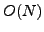
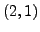
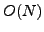
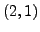

Considerable effort has been put forth in efforts to simulate
Edge Localized Modes (ELMs) with nonlinear extended magnetohydrodynamic
codes in order to understand the effects of ELMs on plasma confinement
properties. These simulations have led to new numerical challenges.
The disparate time scales demand implicit treatment, but the required
operators for the two-fluid physics leads to non-symmetric matrices.
The broad linear spectrum means greater resolution is required, further
increasing the condition number of the matrices. Thus, an effective
preconditioner is necessary. SuperLU, a direct linear solver, has
proven to be an effective preconditioner for NIMROD's three-dimensional
matrices by application to only the decoupled two-dimensional matrices.
Because the majority of the simulation time is spent in matrix solves,
effective use of computational resources requires effective linear
solves. Multigrid methods, while more than 30 years old, are currently
regarded as the most efficient solvers for a wide variety of problems.
For elliptic problems, they have been shown to be the fastest algorithms.
Multigrid methods are scalable (or optimal) because
they can solve a linear system with  unknowns with  operations.
In addition to this favorable scaling, the fundamental idea of operating
at different scales can also be exploited to minimize the computations
and work well for parallel computing. We currently implement the multgrid
linear solver hypre via an interface to the PETSc numerical
suite, which also can interface Super LU. We will present processor
scaling results comparing SuperLU and hypre as preconditioners
for the  tearing mode benchmark case and recent ELM milestone
case. Also, we will present the extended MHD system from which the
preconditioned matrices are derived from so as to illicit further
insight for preconditioning techniques.
unknowns with  operations.
In addition to this favorable scaling, the fundamental idea of operating
at different scales can also be exploited to minimize the computations
and work well for parallel computing. We currently implement the multgrid
linear solver hypre via an interface to the PETSc numerical
suite, which also can interface Super LU. We will present processor
scaling results comparing SuperLU and hypre as preconditioners
for the  tearing mode benchmark case and recent ELM milestone
case. Also, we will present the extended MHD system from which the
preconditioned matrices are derived from so as to illicit further
insight for preconditioning techniques.